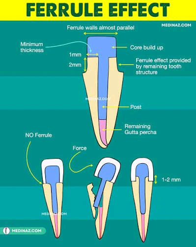

نسخه استخراجشده؛ ترجمه یا تأیید علمی انجام نشده است. وضعیت: captured
مولر اندوشده. دیوارهی باکال و لینگوال سالم ماندهاند، اما ارتفاعشان کم است. هر دو مارجینال ریج از دست رفته و تصمیم گرفتهای رستوریشن غیرمستقیم باندشونده با پوشش کاسپ بگذاری. برای اینکه فرول داشته باشی، همان دیوارهی سرویکال سالم را بتراشی و شولدر بسازی، یا دست نگه داری و روی باند حساب کنی؟
در ظاهر یک تصمیم تراش است؛ در واقع یک سؤال مفهومی است و تا روشن نشود فرول در این زمینه دقیقاً به چه چیزی اشاره میکند، پاسخپذیر نیست.

وقتی از فرول در اندوکراون و اورلی صحبت میکنیم، دقیقاً منظور چیست و آیا همان نقش مکانیکی کراون کامل را دارد؟ باید دید مطالعات چه چیزی را فرول نامیدهاند و در مقایسهی طرحها چه ویژگیهایی از دندان و رستوریشن تغییر کردهاند.
وقتی گفته میشود «فرول مقاومت را افزایش داد»، بدون خواندن بخش متد نمیدانی کدامیک سنجیده شده؛ همین ابهام منشأ بخش بزرگی از تناقض دادههاست. برخی از مطالعات بهطور کامل ننوشتهاند فرولشان چه ارتفاع و ضخامتی داشته یا چه finish lineی به کار رفته.
بایوریم و compression dome یک چارچوب مفهومیاند که عمدتاً بر استدلال مکانیکی و مدلهای کامپیوتری بنا شدهاند؛ مطالعهی کلینیکالی که حفظ بایوریم را مستقیماً و کنترلشده تست کرده باشد پیدا نشد. برای تصمیم تراش مفید است، ولی نباید با همان قطعیت فرول به آن ارجاع داد.